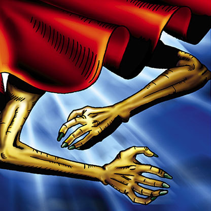

Curtain of the Dark Ones

Description: "When this card is flipped face-up in battle, the opposing enemy is spellbound for one turn."
STATS
ATK: 600
DEF: 500DECK COST
Deck Cost per Card: 16EFFECT NOT IMPLEMENTED
Fusion List (19 Possible Fusions)
- Curtain of the Dark Ones + Ancient Jar = Ushi Oni
- Curtain of the Dark Ones + Bone Mouse = Magical Ghost
- Curtain of the Dark Ones + Celtic Guardian = Dark Elf
- Curtain of the Dark Ones + Dancing Elf = Dark Elf
- Curtain of the Dark Ones + Dragon Statue = Blackland Fire Dragon
- Curtain of the Dark Ones + Fiend's Hand = Magical Ghost
- Curtain of the Dark Ones + Fire Reaper = Magical Ghost
- Curtain of the Dark Ones + Kaminarikozou = The Immortal of Thunder
- Curtain of the Dark Ones + Mech Mole Zombie = Magical Ghost
- Curtain of the Dark Ones + Mega Thunderball = The Immortal of Thunder
- Curtain of the Dark Ones + Morphing Jar = Ushi Oni
- Curtain of the Dark Ones + Mystic Lamp = Lord of the Lamp
- Curtain of the Dark Ones + One-Eyed Shield Dragon = Blackland Fire Dragon
- Curtain of the Dark Ones + Petit Dragon = Blackland Fire Dragon
- Curtain of the Dark Ones + Pot the Trick = Ushi Oni
- Curtain of the Dark Ones + Skull Servant = Magical Ghost
- Curtain of the Dark Ones + The Wandering Doomed = Magical Ghost
- Curtain of the Dark Ones + Wicked Dragon with the Ersatz Head = Blackland Fire Dragon
- Curtain of the Dark Ones + Yamatano Dragon Scroll = Blackland Fire Dragon